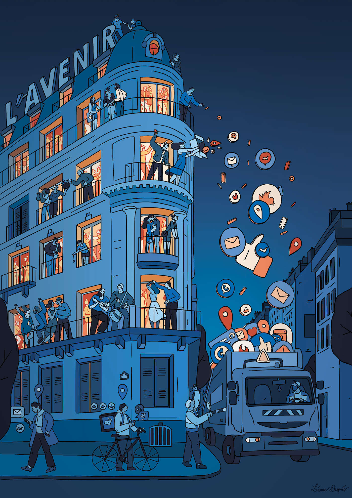

Take a walk on the wood side
— Et si je te dis deep web ?
— On y est déjà, sur le deep web ! On n’est indexé sur aucun moteur de recherche. Notre mesh local couvre tout le Vercors, il a son propre zadacenter à Vassieux, on est raccordé au wood web par Crest, c’est tout. On reste intraçable !
— Intraçable mais déconnecté du vrai réseau !
— C’est quoi le vrai réseau ?
— Le world wide…
— T’es sérieuse, là ?
— Le big data, les clouds ! Les pubs qui poppent de partout ! Le profilage personnalisé, le tracking ! Le bonheur, Steve !
— J’adore quand tu trolles…
Sybille balaie une mèche noire d’un petit souffle discret. Ses joues sont une carte du ciel, des constellations rousses, mobiles comme des satellites. Quand elle sourit, ça danse.
Elle meule la coque du greenphaune, encolle le circuit à la résine et le pose à côté des autres. On doit être bon :
— Trente phaunes, ça suffit pour cinq cents zagueux, non ?
— On doit les mettre où, déjà ? J’ai pas lu le zadibao ce matin…
— Dans les boîtes à livre des hameaux, je crois, au café, à la recyclerie…
— On n’en garde aucun pour les Tisses ?
— Si bien sûr. Les Tisses, c’est leur taf de communiquer, de nous informer, d’appeler l’archipel, d’organiser les rencontres. Ils ont besoin d’être à l’intersection de ce qui se dit. On n’a jamais fait mieux que le téléphone pour ça.
— Je t’ai jamais vu être Tisse, Steve…
— T’es toute neuve ici, c’est pour ça !
Elle se lève et va pédaler sur le chargeur. Au bout de la plate-forme, la vue s’envole sur la canopée des fayards. Au loin, on aperçoit la Drôme et les Trois Becs. Des chauves-souris commencent à zébrer le ciel en zig-zag.
En fait, Sybille est née dans la ZAG mais elle a passé son adolescence à Nestlyon. C’est une hybride, Sybille : moitié libertaire, moitié libérale. J’enchaîne :
— J’ai été tiré au sort l’année dernière, une fois ; cette année non, et c’est pas plus mal. Être Tisse, ça te met le cerveau en puzzle. Et tu bouges sans arrêt. Faut être au courant de tout, prendre le pouls dans les hameaux, aller à Valence, à Gre, à Lyon, écouter les infos publiques, croiser ce qui circule dans l’archipel sur le wood web avec ce qui buzze dans le net commercial… Et restituer ça à tout le monde.
— C’est riche, non ?
— Bien sûr, tu te sens au milieu de l’étoffe. Tu assures la connexion entre les gens, tu fais le liant et tu n’as pas à décider ensuite, c’est assez confortable pour ça. Dissocier information et décision a été une idée forte. Mais faire une synthèse équilibrée est une grosse responsabilité…
— C’est quoi la plage d’ouverture ici pour le web ?
— Une heure par jour devant un écran, c’est le principe.
— Ça inclut le cinéma de prairie ?
— Non, ça c’est du collectif, du partage, c’est une fête.
Elle s’assombrit inexplicablement, enfile sa polaire recyclée. L’humidité tombe du plateau.
—Tu sais de quoi j’ai peur en fait, en revenant ici ?
— Je crois deviner… Tu crains de t’enfermer ?
— Pas vraiment… Je… je sais que la vie locale est très intense, c’est même épuisant d’être tout le temps en collectif, ça t’ouvre énormément d’envies, de sensations, tu te sens plus vaste humainement. Mais sans le mail pour dialoguer à distance, sans les textos que tu gères comme tu veux, sans les appels que tu prends ou pas sur ton phone, tu ne peux plus filtrer ta bulle, tu ne peux plus choisir qui tu acceptes, qui tu rejettes. Je n’ai plus le contrôle sur mes amitiés. Dès que je vais au marché ici, monte une charpente ou fais la bouffe pour vingt, je me prends dans la gueule IRL et H24 tout le monde : les vieux, les mômes, les relous, les sympas…
— C’est sans pitié la vie en communauté, hein ? La ZAG, c’est du plain-pied, tu tries pas, tu te coltines ceux que tu aimes et ceux que t’aimes moins… Mais moi, c’est justement ça… qui me plaît. Ça m’oblige à bosser sur moi, à discuter avec des gens qui pensent pas ce que je pense, mais qui ont quand même beaucoup d’affinités avec le monde que je veux faire pousser. Cette altérité, elle me nourrit, elle me rend plus souple, plus à l’écoute, plus précis aussi dans les valeurs que je veux défendre. C’est pas cette amitié molle du numérique avec ses smileys et ses faux clashs !
Sybille hoche la tête en débranchant le premier phaune. Elle se connecte sur Gouve, le service public des réseaux, une des plus grandes victoires qu’on ait arraché à l’État : rendre le White Web ouvert, gratuit, sobre et sans pub. Le désincarcérer du World Wide qui reste une saloperie séduisante et consumériste. Toutes ces toiles communiquent mais le Wood, qui est notre net des ZAG, reste protégé des intrusions. C’est un immense patchwork crypté de meshs locaux appuyés sur des zadacenters relocalisés, un câblage et des routeurs propres et une alimentation en énergie mixte husol (humaine/solaire). Tout y est en open source, matériels et logiciels libres, fabricables en atelier. On recycle et répare à 90%, on est en basse tech : le petit Illich en tchatte de joie dans sa tombe.
— Je peux passer un appel ? me demande Sybille qui prend la passerelle vers sa cabane perchée.
À sa façon de tenir le phaune, on sent l’immense habitude des gestes qu’on a perdus. Moi, je suis plus fluide avec un descendeur.
— C’est comme en prison ici ! Un seul appel, détenue Sybille ! Et pour ton avocat !
Elle rit en fuyant, leste comme une ligne de Matisse. J’empoigne la tyrolienne.
Tandis que je glisse à travers la forêt, dans ce soir qui s’éteint, j’ai le temps de capter quelques bribes de sa voix claire qui déjoue le silence…
« Oui… Tu te souviens de Steve ? Les gens sont géniaux ici… Non, non, ils crachent pas sur la techno… ils ont juste trouvé un art de vivre avec elle… Tu me manques aussi… Tu viendras ? »
Illustratrice, Léonie Despréstravaille également pour des studios d’animation à Londres. Aimant particulièrement dessiner des personnages joyeux, modernes, épurés et très colorés, elle cherche à mettre l’accent sur les relations humaines ainsi que les sources de joie du quotidien.
leonie-depres.jpeg
AlainDamasioCreditYohanneLamoulère.jpeg
Alain Damasio est auteur de science-fiction. Il écrit de nombreuses nouvelles, dans lesquelles il mêle science-fiction, fantasy et dystopie politique. Il est notamment l’auteur de La Horde du Contrevent, de La Zone du Dehors et plus récemment du roman Les Furtifs.
(photo par Yohanne Lamoulère)